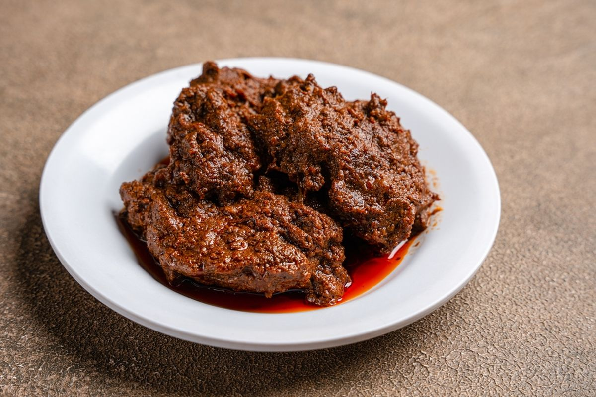

01
Feature Card
Ikon, judul, dan deskripsi singkat dengan shadow kecil.
Panduan warna, tipografi, spacing, tombol, form, dan card yang dipakai pada website, supaya tampilan tetap konsisten.
Merah cabai sebagai warna utama, emas kunyit sebagai aksen, dan netral abu kebiruan untuk teks dan latar.
--primary--primary-dark--accent--white--neutral-50--neutral-100--neutral-300--neutral-600--neutral-900--success--warning--dangerSatu keluarga font (Arial) dengan skala ukuran yang konsisten. Body memakai line-height 1.7 agar nyaman dibaca.
Paragraf pengantar (lead)
Paragraf isi untuk deskripsi menu dan penjelasan.
Jarak mengikuti kelipatan 8px, supaya susunan konten rapi dan mudah diulang.
Contoh form pemesanan: input, select, textarea, checkbox, dan radio, lengkap dengan keadaan error.
Dua jenis card: feature card untuk keunggulan, dan facility card (dengan gambar) untuk menu.
Ikon, judul, dan deskripsi singkat dengan shadow kecil.

Gambar di atas, lalu judul dan deskripsi menu.